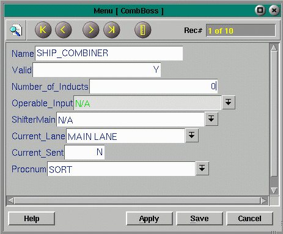

Combiners
This menu allows on-site configuration of combiners. There are two menus which work together to provide this capability. The CombLane menu controls the individual lanes, while the CombBoss controls the action of the combiner itself.
CombLane
Fields:
Name - a string uniquely describing the lane of the combiner
Prescence Eye - brings up the Conveyor menu, from which the IO of the presence eye can be selected
Analog IO - brings up the Conveyor menu, so the IO can be selected
Current Value - an integer
Priority - an integer
Full Timer - brings up the Timer menu
Waiting Timer - brings up the Timer menu
Other Bit - an integer
Wide Box - brings up the Conveyor menu
Shifter - brings up the Shifters menu
Stop Value - integer value
Slow Value - integer value
Fast Value - integer value
Go Fast - brings up the Conveyor menu
Go Slow - brings up the Conveyor menu
Go Stop - brings up the Conveyor menu
Boss Record - brings up the CombBoss menu, from which the Combiner that will control this lane can be selected
AccumSSV - brings up the Conveyor menu, from which the solenoid controlling accumulation can be selected
EnableIO - brings up the Conveyor menu, so the IO can be selected
LastToRun - an integer
State - an integer indicating the state of the lane
CombBoss
|
Fields:
|  |
Copyright © 2001 Fortna Inc. All rights reserved.